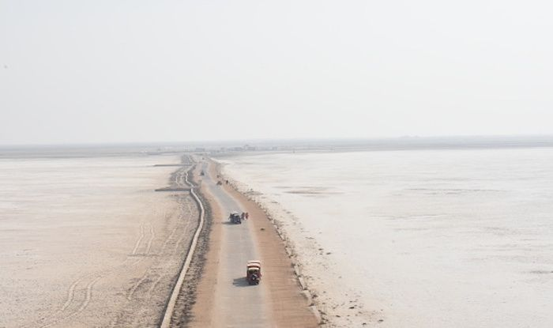
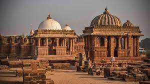
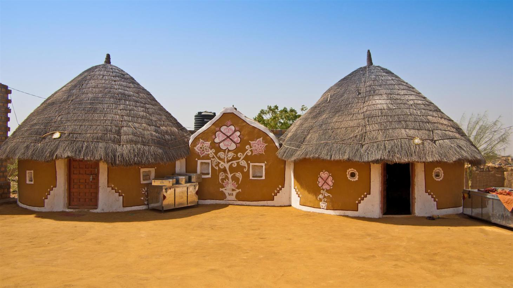

Bhuj is a city in the Kutch district of the Gujarat region of India. Bhuj is kind of an historical city. It has a long history of kings and empires. Bhuj has a population of about 130,000.It serves as a stop over to explore the remote areas of Kutch. Bhuj can also serve as base where day trips to dhordo,khavda and kala dungar can be done.
From Mumbai you can reach Bhuj by plane on Air India. There are other connections from all major cities of Gujarat. You can also get here by train from Mumbai. The city is not big so you can get around by many ways. Catch an auto-rickshaw (tuk-tuk), or you can try to hire a guide with his vehicle. Bargaining is a must as they will quote high if they see you are a first timer. If you have time you can also hire a bicycle and roam around the city.
Shree Swaminayan Temple, Near Hamirsar lake: A magnificent architectural masterpiece built from marble a stunning place to visit. The all white structure of the temple is sure to take breath away. Pragmahal Palace: The palace of rulers of Kutchh region. Maharao Pragmalji initiated the creation of this palace. This Gothic styled structure is must visit. Opens at 10am. Aaina Mahal: in compound of Pragmahal Palace. Literally translates as Palace of Mirrors. And it is. A beautiful palace now renovated after massive earthquake in 2001. It also houses a handicraft museum where the crafts from various parts of Kutch is put. Hamirsar Lake: In the heart of the city, the lake is quite a site to sit and chill out while roaming around it. Bhujiyo Hill: A fort made by ancient rulers to protect the city. Now it is open for common public to see. A sure shot favorite if photography is your interest. You can get a nice panoramic view of whole city from here. Chhatardi [Cenotaphs], Near Hamirsar Lake: The cenotaphs of rulers is a picturesque place. Featured in Bollywood movies, the place and garden around it makes a nice time.
